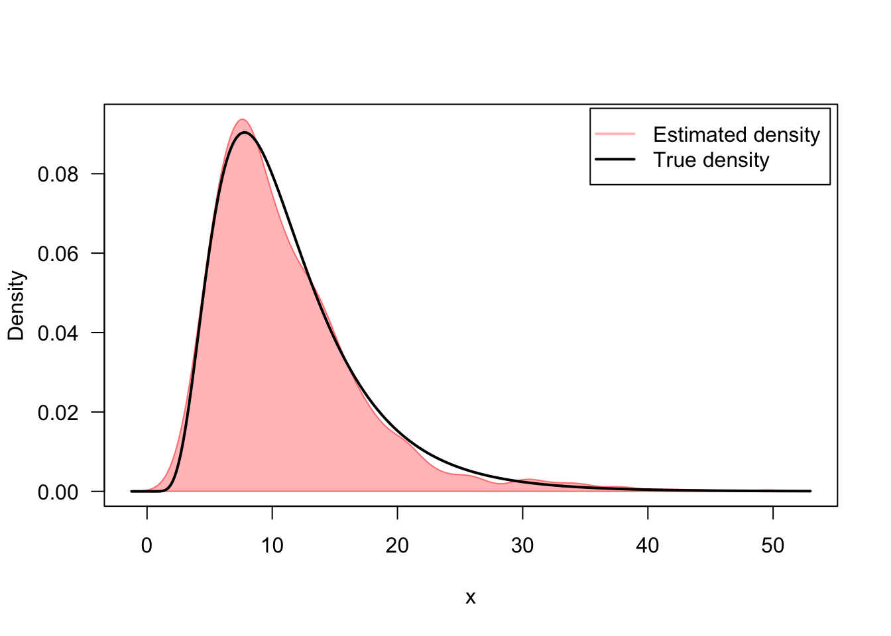
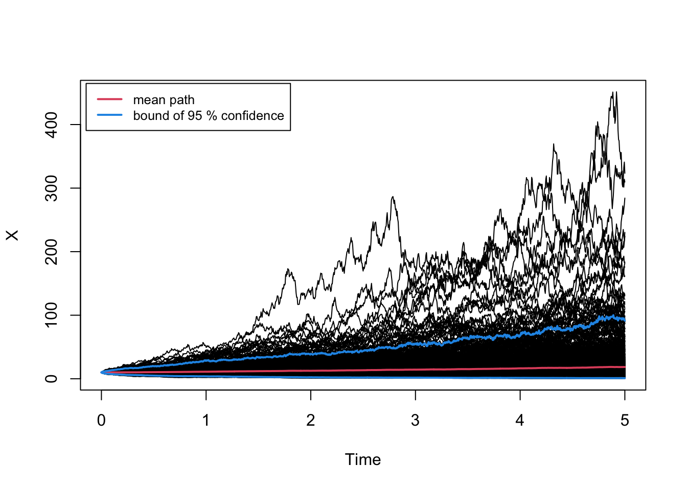

31 Stochastic
31.1 Gamblers Ruin
The random walk we’re simulating is a symmetric random walk from some initial location, and calculating the expected hitting time of crossing some upper or lower boundary
Code
set.seed(20)
k <- 10
rw <- rw_sim(a, b, p, k, return_path = TRUE)
qplot(0:(length(rw) - 1), rw, geom = "line", xlab = "time", ylab = "state", linetype = "random walk path") +
geom_hline(yintercept = b, color = "tomato1") +
geom_hline(yintercept = a, color = "tomato1") +
annotate("point", x = 0, y = 10, size = 2, color = "lightblue") +
annotate("label", label = "k - initial state", x = 3, y = 9, fill = "lightblue", size = 2) +
annotate("point", x = 44, y = 0, size = 2, color = "lightblue") +
annotate("label", label = "T - hitting time", x = 41, y = 1, fill = "lightblue", size = 2) +
scale_linetype_manual(values = c(3)) +
labs(linetype = "",
title = "Hitting Times of Random Walk") +
lims(y = c(a, b)) +
theme_minimal() +
theme(legend.position = "bottom")
By theory, for the symmetric random walk, (see Durrett)
\begin{aligned} E[T|X_0 = k] = (k - a)(b - k) \end{aligned}
Code
hitting_times <- replicate(10000,
rw_sim(a,b,p, k))
mean(hitting_times)[1] 101.017831.2 Stochastic Processes
A great overview of Differential Equations in R is covered by
- “sde” - stochastic differential equations
- “Sim.DiffProc”- simulate diffusion processes
- “ReacTran” - functions for generating finite differences on a grid
31.2.1 Wiener Process
The most basic wiener process takes the form, which describes Brownian motion. This differential equation models 1 dimensional diffusion, and to see this, we can imagine the probability distribution over time. Each of the sample paths are a random walk with gaussian increment with proportional
dx = dW
- x is the position, which is a function of time
- dW is the Wiener Noise, gaussian distribution with
Code
x0 <- 0 # initial position
t0 <- 0 # initial time
dt <- .01
nt <- 100 # how many time steps to take,
dx <- rnorm(nt, 0, dt) # sample steps
x <- cumsum(c(x0, dx)) # sample path
rwiener <- function(x0 = 0, t0 = 0, dt = .01, nt = 100) {
dx <- rnorm(nt, 0, sqrt(dt)) # sample steps
cumsum(c(x0, dx)) # sample path
}
set.seed(1)
wiener_paths <- replicate(2000, rwiener())
wiener_ts <- ts(wiener_paths, start = t0, deltat = dt)
ts.plot(wiener_ts, col = rgb(0,0,0,alpha = .03), ylim = c(-4, 4), main = "Wiener Sample Paths")
Instead of the sample path approach, if we instead think about the probability density of our position as a function of time, we can see that the probability function becomes more diffuse over time. Thus, it’s not surprising that we can describe the diffusion with a PDE through the Fokker-Plank Equation.
Code
# code to create animations
x <- seq(-3, 3, by = .01)
# animation of density
saveGIF({
for (i in 2:100) {
hist(wiener_ts[i,], xlim = c(-3, 3), ylim = c(0, 10),
freq = F,
breaks = 40,
main = paste0("Density of Sample Paths, Time = ", i*dt),
xlab = "x")
lines(x, dnorm(x, sd = sqrt(dt * i)), col = "red")
legend("topright", legend = c("theoretical density"), col = 2, lty = 1, bty = "n")
}
}, movie.name = "test.gif", loop = T, interval = .01)
# along the sample paths
saveGIF({
for (i in 2:100) {
ts.plot(wiener_ts, col = rgb(0,0,0,alpha = .03), ylim = c(-4, 4), main = "Wiener Sample Paths")
abline(v = i * dt, col = "red")
}
}, movie.name = "sample.gif", loop = T, interval = .01)

The associated Fokker Plank equation associated with this stochastic differential equation, is simply the heat equation.
\frac{\partial}{\partial t} P(x, t) =\frac{1}{2}\frac{\partial^2}{\partial x^2}P(x,t)
- Initial condition: P(x, 0) = \delta(x)
- \delta(x) is the delta-dirac function, which has infinite mass at 0.
- Boundary Condition: P(a, t) = P(b, t) = 0
- since our simulation has to occur on some bounded region [a,b], we just set the simulation to have absorbing boundaries.
Solving the PDE with initial value conditions analytically, we find that the solution to this eigenvalue problem is
\begin{aligned} P(x, t) = \frac{1}{\sqrt{2\pi t}}\exp \left(\frac{x^2}{2t}\right) \end{aligned}
We can also calculate the solution by finite differencing. We can solve the PDE and show that our solutions match the rate given by the SDE formulation of the PDE. We use code from the vignette of the ReacTran R package. ReacTran package uses the method of lines for solving PDE’s, in which we set up a discretized grid, and solve the ODE as a vector
Code
# ReacTran uses the
N <- 601
xgrid <- setup.grid.1D(x.up = -3, x.down = 3, N = N) # grid of values
x <- xgrid$x.mid
D.coeff <- .5 # diffusion coefficient from solving FP
# defines the diffusion (the derivative with respect to time)
# Since our function has no time dependence, we only need to calculate the derivatives for the next step
Diffusion <- function (t, Y, parms){
tran <- tran.1D(C = Y, C.up = 0, C.down = 0, # dirchlet boundary conditions, set to 0
D = D.coeff, dx = xgrid)
list(dY = tran$dC)
}
# Set initial condition of the differential equation, we approximate the
Yini <- c(rep(0, 300), 100, rep(0, 300)) # very tall initial mass
tt <- seq(t0, dt * nt, dt) #times to simulate
# solve heat equation
out <- ode.1D(y = Yini, times = tt, func = Diffusion, parms = NULL, dimens = N)
# library(tidyverse)
colorBreaks = 10^(seq(-2, 2, length.out = 255)) # different
plot(raster(t(out[,-1]), xmn =0, xmx = 1, ymn = -3, ymx = 3),
asp = NA,
breaks = colorBreaks,
col = rev(hcl.colors(length(colorBreaks) - 1L, palette = "Rocket")), legend = FALSE,
xlab = "time", ylab = "x", interpolate = TRUE)
31.2.2 Ornstein-Uhlenbeck Process
Adding a drift term to the stochastic equation, gives the stochastic equation a mean. The negative in front of the drift implies that it will always regress to 0, because it’s a function of x (kind of like a spring constant). The \theta parameter controls how strong the restoring force is.
dx = -\theta x\, dt + \sigma \, dW
- x is position, which is a function of time.
- dW is the wiener process.
- \theta is the rate of return to the mean (0)
- Variance of
The following shows the effect of the parameters \theta = 3 and \sigma = .5 with initial state x_0 = 5. We also show the process with a different initial state x_0 = -3 to show the restoring effect to the mean.
Code
# OU function
ou_paths <- function(npaths = 1, theta = 3, sigma = .5, x0 = 5, nt = 100, t0 = 0, dt = .01) {
sde_path_ou <- function() {
x <- vector(mode = "numeric", length = nt + 1)
x[1] <- x0
wiener_noise <- rnorm(nt, sd = sqrt(dt))
for (i in 1:nt) {
dx <- -theta * x[i] * dt + sigma * wiener_noise[i]
x[i+1] <- x[i] + dx
}
return(x)
}
ts(replicate(npaths, sde_path_ou()), start = t0, deltat = dt)
}
theta <- 3
sig <- .5
y0 <- 5
nt <- 100
dt <- .01
t0 <- 0
set.seed(1)
ou_ts <- ou_paths(npaths = 500, theta = theta, sigma = sig, x0 = y0, nt = nt, t0 = t0, dt = dt)
ts.plot(ou_ts, col = rgb(0,0,0,alpha = .05)) # plot
tt <- seq(0, 1, .01)
theory_mean <- y0*exp(-theta*tt)
theory_var <- sig^2 / 2 / theta * (1 - exp(-2 * theta * tt))
lines(tt, theory_mean, col = "red")
lines(tt, theory_mean + 2 * sqrt(theory_var), lty = 2, col = "red")
lines(tt, theory_mean - 2 * sqrt(theory_var), lty = 2, col = "red")
legend("topright", legend = c("mean", "\u00B1 2sd"), col = 2, lty = 1:2)Because of this restoring property to the mean, a closely related stochastic process is known as the Vasicek model (commonly used to model interest rates), which adds another parameter to control what the mean is.
dx = \theta(\mu - x)\, dt + \sigma \, dW
reduces to the 0 mean OU process when \mu = 0.
The long term variance of this model is also
This process is important because it’s the continuous time analogue of a discrete time AR1 process.
Similarly, the associated Fokker-Plank Equation for this SDE is:
\begin{aligned} \frac{\partial P(x, t)}{\partial t} = -\mu \frac{\partial P(x, t)}{\partial x} + \frac{\sigma^2}{2}\frac{\partial^2P(x, t)}{\partial x^2} \end{aligned}
Code
# simulation parameters
t0 <- 0 # time start
dt <- .01 # time step
tn <- 1 # time end
nt <- tn/dt # number of time steps
tgrid <- seq(t0, nt * dt, dt) # time grid
x0 <- 6 # space start
xn <- -2 # space end
nx <- 800 # number of grid points
xgrid <- setup.grid.1D(x.up = x0, x.down = xn, N = nx) # space grid
x <- xgrid$x.int
sig <- .5 # Parameters from OU simulation
mu <- -3 # Parameters from OU simulation
D_coef <- sig^2 / 2 # Diffusion function
y0 <- c(rep(0, 100), 100, rep(0, 699)) # initial condition
# advection-diffusion (method of lines)
advec <- function(t, Y, parms) {
trans <- tran.1D(C = Y, D = D_coef, v = mu*x, C.up = 0, C.down = 0, dx = xgrid)
return(list(dY = trans$dC))
}
# solve advec/diffusion equation
out <- ode.1D(y = y0, times = tgrid, func = advec, parms = NULL, dimens = nx)
# plot solution
colorBreaks = 10^(seq(-3, 3, length.out = 255)) # different to capture more drift in lower parameters
plot(raster(t(out[,-1]), xmn = 0, xmx = 1, ymn = xn, ymx = x0),
asp = NA,
breaks = colorBreaks,
col = rev(hcl.colors(length(colorBreaks) - 1L, palette = "Rocket")), legend = FALSE,
xlab = "time", ylab = "x", interpolate = TRUE)
Code
# rcOU(n=1, Dt=0.1, x0=1, theta=c(0,2,1))Code
theta <- 3
sig <- .5
# simplest first order ode
ou_mean <- function(t, y, parms) {
dy <- -theta * y
return(list(dy))
}
x0 <- 5 # initial mean
tt <- seq(0, 1, by = .01)
out_mean <- ode(x0, tt, ou_mean, parms = NULL)
cbind(out_mean[,2],
5 * exp(-3* tt)) |> head() # matches [,1] [,2]
[1,] 5.000000 5.000000
[2,] 4.852224 4.852228
[3,] 4.708817 4.708823
[4,] 4.569653 4.569656
[5,] 4.434600 4.434602
[6,] 4.303538 4.303540Code
# function coding differential equation
ou_var <- function(t, v, parms) {
dv <- -2 * theta * v + sig^2
return(list(dv))
}
y0 <- 0 # initial variance
tt <- seq(0, 1, by = .01)
out <- ode(y0, tt, ou_var, parms = NULL)
cbind(out[,2],
sig^2 / 2 / theta * (1 - exp(-2 * theta * tt))) |> head() # matches! [,1] [,2]
[1,] 0.000000000 0.000000000
[2,] 0.002426880 0.002426478
[3,] 0.004712408 0.004711648
[4,] 0.006864444 0.006863741
[5,] 0.008891073 0.008890506
[6,] 0.010799760 0.01079924131.2.3 General Linear SDE
dx = -\gamma x \, dt + g x\, dW
31.3 Simulating Stochastic Differential Equations
Following the package vignette
rsde1d- random deviates from a sde objectdsde1d()- approximate density from sde objectsnssde2d()- simulates 2d sde
We simulate from the example
\begin{aligned} dX = \frac{1}{2}\theta^2Xdt + \theta X dW \end{aligned}
Solving this for the steady state mean, then we get
\begin{aligned} E[X| t= 1, x_0 = 10, \theta = .5] = \exp{\left(\frac{1}{2}\theta^2t\right)} \end{aligned}
Code
library(sde)
library(Sim.DiffProc)
set.seed(1234, kind = "L'Ecuyer-CMRG")
theta <- .5
f <- expression((.5*theta^2*x))
g <- expression(theta*x)
mod1 <- snssde1d(drift = f,
diffusion = g, # for the random gaussian portion
x0=10, # initial conditions
t0=0,
T = 5,
M = 1000, # number of sample solutions to simulate
type = "ito", # type of integral
method = "euler") # method
mod2 <- snssde1d(drift = f, diffusion = g, x0=10, M = 1000, type = "str")
# many summary and confidence intervals.
summary(mod1, at = .3) # by monte carlo of fitting the stochastic paths of the pandemic
Monte-Carlo Statistics for X(t) at time t = 0.3
Mean 1.017744e+01
Variance 8.046738e+00
Median 9.705629e+00
Mode 8.953720e+00
First quartile 8.137266e+00
Third quartile 1.178582e+01
Minimum 3.875000e+00
Maximum 2.458763e+01
Skewness 9.007665e-01
Kurtosis 4.327431e+00
Coef-variation 2.787220e-01
3th-order moment 2.056089e+01
4th-order moment 2.802011e+02
5th-order moment 2.130882e+03
6th-order moment 2.519499e+04Code
summary(mod1)
Monte-Carlo Statistics for X(t) at time t = 5
Mean 1.852923e+01
Variance 8.618737e+02
Median 9.895477e+00
Mode 4.667985e+00
First quartile 4.490471e+00
Third quartile 2.092506e+01
Minimum 3.555266e-01
Maximum 3.234119e+02
Skewness 5.208753e+00
Kurtosis 4.095205e+01
Coef-variation 1.584399e+00
3th-order moment 1.317951e+05
4th-order moment 3.042026e+07
5th-order moment 7.738945e+09
6th-order moment 2.080372e+12Code
# sample from the conditional distribution, conditional on the initial value.
rsde1d(mod1, at = 1) [1] 8.735682 7.344977 8.438110 11.141480 5.586668 6.867419 7.721280
[8] 12.731186 10.360972 6.018939 14.066648 17.632072 11.276746 11.415946
[15] 8.265950 14.989736 14.369225 4.820591 5.271232 20.415143 17.979233
[22] 13.230907 6.887687 2.187285 12.242744 14.272089 20.569979 7.562125
[29] 12.919931 19.054617 18.087574 9.257144 9.943448 15.041281 12.334913
[36] 18.685543 14.704401 4.301899 16.709410 14.305020 6.789316 13.940393
[43] 6.961607 11.836772 4.334405 10.145721 5.925220 5.398389 15.377760
[50] 14.162652 9.727295 9.029960 8.911256 6.229414 15.443105 9.591912
[57] 2.272097 6.588119 4.347615 12.435848 14.882340 14.506381 14.865681
[64] 19.749515 5.319737 6.020032 7.552928 13.851179 6.560008 11.221533
[71] 23.895195 8.199682 13.339344 8.177069 10.998979 10.382818 6.421800
[78] 5.117034 11.057268 13.411960 21.883071 7.458649 2.764852 7.795483
[85] 3.494987 8.436737 29.733549 10.116049 11.144152 9.677250 5.530168
[92] 4.957671 13.428547 4.674463 9.916626 9.569839 7.427121 8.724480
[99] 13.887375 37.832214 4.827476 7.409082 7.590002 6.832259 5.701437
[106] 10.939493 10.508211 10.489977 9.168765 5.442206 16.367188 12.729222
[113] 8.394352 6.296143 6.000235 12.853669 15.592119 3.305159 19.224247
[120] 10.097026 44.081143 5.302471 6.619034 21.294119 9.883666 7.660163
[127] 16.111134 8.640803 9.070033 8.521571 14.957914 9.737643 14.314386
[134] 8.301395 16.850106 4.723184 10.570269 8.751662 6.431607 6.979234
[141] 5.511512 26.072577 15.973050 13.956336 22.281831 7.980447 5.167372
[148] 13.633486 10.902735 4.777038 5.237959 8.998896 14.379111 16.796432
[155] 17.796592 4.844048 15.062977 7.677406 8.445849 12.292614 10.925302
[162] 4.170871 11.204972 12.258030 6.415237 6.684313 5.495029 6.850544
[169] 10.913465 49.550683 7.601754 9.877510 11.417959 11.645556 31.897234
[176] 18.124257 7.917117 9.229859 23.545624 5.907581 6.367854 16.060443
[183] 16.906608 15.458326 7.382460 12.498490 6.763430 18.322312 12.067221
[190] 6.080208 10.249380 18.303086 18.264506 8.728580 3.651273 11.783608
[197] 5.060811 12.424674 8.349002 8.469587 7.752336 16.294506 7.827614
[204] 7.571563 10.349443 12.190055 6.931615 6.369010 8.259565 9.588349
[211] 12.020285 7.922763 14.949491 30.392037 5.264710 10.551347 3.384744
[218] 20.320983 21.856545 11.647066 8.165454 29.861374 6.168673 19.204258
[225] 8.919032 15.066448 6.130486 6.481084 8.632471 6.292030 40.124115
[232] 9.637588 4.706044 17.181973 11.534985 19.559957 12.331954 20.305912
[239] 18.928723 8.605554 23.624724 16.527202 14.367721 10.695400 12.257499
[246] 10.192400 8.192270 7.672497 11.238924 19.316097 15.986567 15.611011
[253] 17.519380 29.201258 11.289080 9.692351 8.599260 8.392094 5.994662
[260] 4.420677 25.570475 3.042475 15.181913 13.223439 8.824830 17.427158
[267] 10.109894 10.619604 9.990138 12.708607 5.451930 16.366812 17.749570
[274] 11.251404 22.060901 13.359091 4.418347 18.234523 5.836354 10.997174
[281] 2.883649 15.985710 18.634768 33.745729 11.946528 9.440531 16.152732
[288] 14.880520 9.168743 8.631228 12.753438 8.075738 9.693134 8.342836
[295] 20.006189 8.524874 8.663646 7.597066 4.401652 10.961263 15.295185
[302] 12.127061 10.941505 7.115255 6.663204 5.789734 9.589647 22.846088
[309] 10.453168 9.980825 3.215731 6.744712 7.847761 14.446800 8.132224
[316] 4.591336 11.428826 15.692374 6.720083 8.102107 12.109067 19.693051
[323] 13.334106 3.227853 21.016287 21.537173 20.175474 4.583812 7.857081
[330] 6.969925 32.054799 10.944720 8.072071 6.843841 7.302450 10.995340
[337] 9.145603 11.263114 17.169122 14.213967 16.979699 13.092382 7.531280
[344] 30.619403 13.971973 9.822643 6.179722 8.576703 10.338145 6.566865
[351] 7.620894 10.133430 15.163833 13.274279 6.832292 6.943379 18.555874
[358] 12.687174 10.018740 6.257596 11.429321 13.087985 2.259171 20.971742
[365] 6.334067 10.045572 8.205755 11.711326 9.118618 6.676735 8.117085
[372] 10.928763 11.507133 15.253922 14.932853 10.061278 6.164131 6.546635
[379] 8.625697 12.149510 11.037470 9.079694 16.082104 8.482924 14.318134
[386] 15.781915 10.291881 21.851704 13.871237 4.276425 6.207424 8.029599
[393] 11.960281 5.559591 17.291110 9.677869 11.317548 14.330349 7.810183
[400] 11.656946 16.664891 8.091306 6.034429 10.601989 16.624960 14.969227
[407] 13.382674 6.649358 13.085946 14.187247 9.598343 15.411206 13.089092
[414] 14.619234 10.976456 4.399503 12.225032 16.272124 9.255786 13.420766
[421] 18.237756 7.717608 18.250837 5.484751 6.033969 14.973058 11.576019
[428] 10.466406 12.671159 8.899241 6.791583 13.422994 7.357089 9.806762
[435] 6.560399 12.105947 7.946314 33.023914 5.394390 13.579767 6.886571
[442] 14.622790 6.475099 12.496643 8.585582 20.881496 20.479550 17.481984
[449] 9.297564 3.450331 3.797576 8.111555 6.171378 7.966105 7.236737
[456] 5.465096 8.596575 7.817410 11.538488 8.766524 4.827839 4.502377
[463] 8.901147 6.473632 6.663416 10.265154 5.874232 9.001177 5.715018
[470] 7.121910 4.041778 8.754861 6.287263 8.973394 18.717558 26.161071
[477] 12.311441 7.612512 10.106153 7.446709 7.541342 13.020324 9.146652
[484] 6.766166 7.457560 8.290926 16.938588 4.856854 7.589751 7.947044
[491] 7.950814 10.750785 10.159217 13.429467 7.771240 30.121005 12.172068
[498] 7.950629 10.462018 18.088553 16.483523 12.694791 14.671843 4.005193
[505] 10.586292 5.729691 16.966844 14.672584 13.066228 4.742985 12.670527
[512] 14.901270 18.209804 7.604993 18.141755 7.688447 8.227291 8.361436
[519] 7.597488 12.209817 6.828570 35.243991 13.958377 10.593089 13.057116
[526] 7.254756 4.808694 5.429336 6.925283 22.640658 9.531312 9.404048
[533] 8.583732 14.259011 13.305016 15.772552 7.110868 3.864934 34.554205
[540] 6.916409 5.647479 9.822804 9.394861 11.844615 5.138353 19.474611
[547] 10.302989 16.462268 8.716621 6.470711 20.181255 6.802601 15.097106
[554] 8.314611 13.665932 4.746037 11.280094 6.382058 14.532618 4.592776
[561] 9.385172 6.616017 4.370788 15.934445 9.220422 8.052510 6.414038
[568] 9.319051 10.461963 9.163073 18.131839 11.405959 5.050081 14.878276
[575] 9.440306 7.242909 9.685178 12.001159 7.626404 5.841647 9.401417
[582] 10.913486 8.137871 8.250435 6.241282 20.503743 6.835440 4.075568
[589] 13.317741 8.908230 9.607514 8.781462 11.559201 8.523228 6.189690
[596] 5.004807 8.544644 6.622334 8.725181 4.556923 6.967527 9.825650
[603] 6.800849 3.373310 11.958287 5.057759 3.275936 7.252035 7.505889
[610] 4.961906 15.925863 10.456583 7.333704 13.069035 9.165401 8.437423
[617] 24.225879 10.719532 9.378575 13.554836 6.170304 11.845080 12.074063
[624] 11.107898 17.352267 6.122797 9.149488 8.901404 14.308107 11.750440
[631] 34.384038 10.906011 28.107689 6.623738 17.509469 8.522182 5.067133
[638] 11.250448 6.978229 13.314177 14.338646 10.854989 7.925843 13.071727
[645] 16.835856 4.845624 9.226108 13.642872 5.772860 8.887952 5.243541
[652] 4.263603 23.188352 13.690002 20.874907 8.918477 10.476960 6.636883
[659] 8.761189 4.709350 11.320123 24.507418 9.163258 8.992812 8.472868
[666] 5.879822 4.797541 12.477772 8.286386 5.717944 5.165515 9.274063
[673] 15.228879 16.709629 6.133527 13.981494 14.309024 4.264435 26.002135
[680] 13.968556 7.814676 5.876766 10.549172 20.794342 5.853262 8.843604
[687] 3.812978 17.399245 7.863833 25.094374 8.615947 7.964152 13.314466
[694] 12.680812 4.923450 6.455609 11.434462 14.541552 8.714530 12.612795
[701] 6.163971 15.209324 6.847874 3.844012 7.103783 7.574910 10.795806
[708] 16.410587 5.662586 13.531550 33.414515 7.564603 5.195435 13.201671
[715] 4.325110 10.617245 10.300937 11.935363 13.869749 8.080492 15.102606
[722] 16.282545 5.176784 5.136219 5.285879 5.625455 7.506466 4.921103
[729] 6.765790 7.958353 7.963147 6.934881 3.619867 6.484795 10.017483
[736] 18.284185 8.898351 7.059117 6.588445 7.935032 6.322977 41.917574
[743] 12.404358 14.242764 5.097891 14.854218 7.547913 8.666346 13.214126
[750] 5.100667 12.028939 10.790179 12.294230 9.122289 6.434208 5.884426
[757] 13.364949 8.006220 19.007541 10.488436 8.082841 13.238103 6.719256
[764] 7.227000 16.549775 7.153885 12.443782 9.452624 25.252522 9.817281
[771] 12.822458 9.911348 5.790378 3.705566 3.895793 21.127984 11.495832
[778] 15.299475 19.963282 11.816459 6.252820 8.443047 15.334389 6.132213
[785] 12.981232 10.010884 5.690510 10.145072 25.650558 12.716718 6.782282
[792] 6.562549 16.509622 6.600271 37.759372 7.100508 14.414004 3.065307
[799] 10.515343 13.527511 7.875056 13.066810 4.108463 11.023320 11.310364
[806] 5.734216 4.638748 11.251885 5.755294 35.481208 15.873180 17.853320
[813] 10.019237 10.815541 7.331981 13.915003 17.168597 27.299591 4.626265
[820] 11.234908 15.389150 5.171982 20.390825 11.365891 5.377197 5.289994
[827] 8.019107 12.923733 6.289761 4.747143 11.767389 8.075054 7.589202
[834] 7.063260 7.810713 7.875881 6.130386 10.039928 23.316898 7.935942
[841] 6.674351 3.131728 16.350651 5.097724 5.988275 14.234798 12.825203
[848] 7.611399 37.671219 4.817731 5.256682 7.979159 17.991390 21.070383
[855] 7.529323 16.710610 7.649365 6.302058 9.598788 12.846073 13.906178
[862] 5.188373 25.243174 22.341673 6.530109 10.424809 5.226890 3.973538
[869] 3.990799 13.202370 9.261346 14.617998 16.655459 7.951494 5.906118
[876] 4.769386 8.912543 15.912557 3.118072 14.157836 6.209171 9.392903
[883] 4.554953 13.466440 3.797291 8.291070 10.196705 10.299693 22.681143
[890] 15.534273 7.670050 6.763429 10.566136 26.770649 6.446907 12.851007
[897] 8.038916 5.252278 10.528966 4.640688 11.907272 8.239203 13.426491
[904] 12.509110 11.085973 4.344476 7.568144 21.025616 8.501848 16.664800
[911] 9.309018 6.923763 7.267968 5.632527 9.304927 10.994524 3.350223
[918] 10.126452 7.169008 2.926619 9.687305 5.026705 9.950606 10.244122
[925] 8.669018 9.389935 12.937114 9.959240 5.039959 12.693318 11.938860
[932] 5.696850 8.662153 10.259350 11.582157 8.450874 4.766270 3.424745
[939] 13.851277 12.794559 20.900590 12.841001 14.012461 15.627804 30.236454
[946] 14.350391 5.393277 9.856223 6.522718 9.223314 4.711810 8.786792
[953] 10.369246 8.506418 11.455688 6.973830 5.460132 14.463669 5.608424
[960] 18.667199 7.510966 8.206467 8.737598 19.988102 6.779640 26.523068
[967] 7.889209 8.381606 6.199563 30.781468 5.955071 9.740918 17.915503
[974] 19.661966 11.802730 9.512840 19.829487 12.278193 21.192155 15.600610
[981] 6.838013 19.593403 11.454369 4.072621 12.941464 6.992606 15.983477
[988] 7.864295 9.085529 12.672088 5.475907 31.787008 6.200947 7.029389
[995] 6.273913 10.351483 10.609119 7.566718 7.227250 13.763964Code
mu1 <- log(10); sigma1= sqrt(theta^2)
mu2 <- log(10) - .5*theta^2; sigma2= sqrt(theta^2)
# ito's integral
appdensI <- dsde1d(mod1, at = 1) # conditional density estimation at particular time
# strat integral
appdensS <- dsde1d(mod2, at = 1)
plot(appdensI, dens = function(x) dlnorm(x, meanlog = mu1, sdlog = sigma1))
Code
plot(appdensS, dens = function(x) dlnorm(x, meanlog = mu2, sdlog = sigma2))Code
plot(mod1) # show the plot values
lines(time(mod1),apply(mod1$X,1,mean),col=2,lwd=2)
lines(time(mod1),apply(mod1$X,1,bconfint,level=0.95)[1,],col=4,lwd=2)
lines(time(mod1),apply(mod1$X,1,bconfint,level=0.95)[2,],col=4,lwd=2)
legend("topleft",c("mean path",paste("bound of", 95,"% confidence")),inset = .01,col=c(2,4),lwd=2,cex=0.8)
In two dimensions, vector of drift and diffusion
\begin{aligned} dX = -\frac{1}{\mu} Xdt + \sqrt{\sigma} dW, \quad X_0 = x_0 \end{aligned}
Code
x0=5;y0=0
mu=3;sigma=0.5
fx <- expression(-(x/mu),x)
gx <- expression(sqrt(sigma),0)
mod2d <- snssde2d(drift=fx,diffusion=gx,Dt=0.01,M=1000,x0=c(x0,y0),method="smilstein")
mod2dItô Sde 2D:
| dX(t) = -(X(t)/mu) * dt + sqrt(sigma) * dW1(t)
| dY(t) = X(t) * dt + 0 * dW2(t)
Method:
| Second-order Milstein scheme
Summary:
| Size of process | N = 1001.
| Number of simulation | M = 1000.
| Initial values | (x0,y0) = (5,0).
| Time of process | t in [0,10].
| Discretization | Dt = 0.01.Code
summary(mod2d, at = 10)
Monte-Carlo Statistics for (X(t),Y(t)) at time t = 10
X Y
Mean 0.2114239 1.473032e+01
Variance 0.7162004 2.452654e+01
Median 0.2211481 1.474951e+01
Mode 0.2740158 1.509543e+01
First quartile -0.3465095 1.120916e+01
Third quartile 0.7881960 1.795676e+01
Minimum -2.5031512 -1.658424e+00
Maximum 2.9862385 2.781259e+01
Skewness -0.0183102 -1.056010e-02
Kurtosis 3.1056085 2.905123e+00
Coef-variation 4.0027928 3.362064e-01
3th-order moment -0.0110980 -1.282691e+00
4th-order moment 1.5930000 1.747580e+03
5th-order moment 0.1742750 -9.018843e+02
6th-order moment 5.9779595 1.942875e+05Code
## in time
plot(mod2d)Code
## in plane (O,X,Y)
plot2d(mod2d,type="n")
points2d(mod2d,col=rgb(0,100,0,50,maxColorValue=255), pch=16)31.4 Guassian Markov Random Field
GMRF is a generalization of the markov chians. I want to know what data actually looks like when simulated from a GMRF. We start with a line graph, which is just a standard random walk
31.4.1 Random Walk
Code
n <- 20 # 20 obs
N <- 100 # nodes
#' Random Walk
#'
#' @param N number of nodes
#'
#' @return
#' @export
#'
#' @examples
randomwalk <- function(nodes = 10, y0 = 0, drift = 0, stddev = 1) {
y0 + cumsum(rnorm(nodes, mean = drift, sd = stddev))
}
set.seed(1)
rw_mat <- replicate(1000,
randomwalk(10)) # 6 rows, 1000 samples
rw_cov <- rw_mat %>% t() %>% cov()
rw_prec <- rw_cov %>% solve()
image(rw_prec)Code
# can try to use glasso to estimate sparse patterns in the covariance matrix
rw_glasso <- glasso(rw_cov, rho = .02, nobs = 1000)
rw_glassopath <- glassopath(rw_cov, rholist = seq(.01, .40, .01))m
[1] 1
m
[1] 2
m
[1] 3
m
[1] 4
m
[1] 5
m
[1] 6
m
[1] 7
m
[1] 8
m
[1] 9
m
[1] 10
m
[1] 1
m
[1] 2
m
[1] 3
m
[1] 4
m
[1] 5
m
[1] 6
m
[1] 7
m
[1] 8
m
[1] 9
m
[1] 10
m
[1] 1
m
[1] 2
m
[1] 3
m
[1] 4
m
[1] 5
m
[1] 6
m
[1] 7
m
[1] 8
m
[1] 9
m
[1] 10
rho=
[1] 0.4
rho=
[1] 0.39
rho=
[1] 0.38
rho=
[1] 0.37
rho=
[1] 0.36
rho=
[1] 0.35
rho=
[1] 0.34
rho=
[1] 0.33
rho=
[1] 0.32
rho=
[1] 0.31
rho=
[1] 0.3
rho=
[1] 0.29
rho=
[1] 0.28
rho=
[1] 0.27
rho=
[1] 0.26
rho=
[1] 0.25
rho=
[1] 0.24
rho=
[1] 0.23
rho=
[1] 0.22
rho=
[1] 0.21
rho=
[1] 0.2
rho=
[1] 0.19
rho=
[1] 0.18
rho=
[1] 0.17
rho=
[1] 0.16
rho=
[1] 0.15
rho=
[1] 0.14
rho=
[1] 0.13
rho=
[1] 0.12
rho=
[1] 0.11
rho=
[1] 0.1
rho=
[1] 0.09
rho=
[1] 0.08
rho=
[1] 0.07
rho=
[1] 0.06
rho=
[1] 0.05
rho=
[1] 0.04
rho=
[1] 0.03
rho=
[1] 0.02
rho=
[1] 0.01Code
rw_glassopath$wi[,,6] [,1] [,2] [,3] [,4] [,5] [,6]
[1,] 1.53363033 -0.59705922 -0.05045755 0.000000000 -0.05281481 0.000000000
[2,] -0.59704118 1.46328031 -0.66740241 -0.062748027 -0.01166860 0.000000000
[3,] -0.05045859 -0.66736724 1.48804455 -0.709396648 -0.01840336 0.000000000
[4,] 0.00000000 -0.06272291 -0.70930973 1.502769843 -0.64832439 -0.104003565
[5,] -0.05271855 -0.01139892 -0.01848738 -0.648268462 1.39557882 -0.614267466
[6,] 0.00000000 0.00000000 0.00000000 -0.104181741 -0.61433940 1.450875970
[7,] 0.00000000 0.00000000 0.00000000 0.000000000 0.00000000 -0.685011604
[8,] 0.00000000 0.00000000 0.00000000 -0.006829119 -0.03745143 -0.040873008
[9,] 0.00000000 -0.00267496 0.00000000 0.000000000 -0.02218277 -0.012819793
[10,] 0.00000000 0.00000000 0.00000000 0.000000000 0.00000000 -0.005073061
[,7] [,8] [,9] [,10]
[1,] 0.00000000 0.000000000 0.000000000 0.000000000
[2,] 0.00000000 0.000000000 -0.002589899 0.000000000
[3,] 0.00000000 0.000000000 0.000000000 0.000000000
[4,] 0.00000000 -0.006867342 0.000000000 0.000000000
[5,] 0.00000000 -0.037544676 -0.022236583 0.000000000
[6,] -0.68516608 -0.040524630 -0.012875666 -0.005038421
[7,] 1.44064932 -0.678296252 -0.049116046 0.000000000
[8,] -0.67798966 1.509124167 -0.676270096 -0.090260579
[9,] -0.04922243 -0.676158135 1.480116539 -0.719604508
[10,] 0.00000000 -0.090276515 -0.719623596 0.810028387Code
apply(rw_glassopath$wi, 3, as_function(~sum(.x != 0))) # why does the number of elements increase then decrease? behavior is curious [1] 80 70 64 64 60 58 58 60 60 62 62 64 68 68 68 68 70 70 70 70 70 70 72 72 72
[26] 74 74 74 74 74 74 76 78 78 78 78 78 78 78 80Code
set.seed(1)
gaus <- matrix(rnorm(50*20), ncol = 20)
gaus_cov <- var(gaus)
gaus_prec <- gaus_cov %>% solve()
gaus_prec %>% Matrix() %>% image() # has a diagonal structureCode
gaus_glasso <- glasso(gaus_cov, rho = .03, nobs = 50)
gaus_glassopath <- glassopath(gaus_cov, rho = seq(.01, .7, .01))rho=
[1] 0.7
rho=
[1] 0.69
rho=
[1] 0.68
rho=
[1] 0.67
rho=
[1] 0.66
rho=
[1] 0.65
rho=
[1] 0.64
rho=
[1] 0.63
rho=
[1] 0.62
rho=
[1] 0.61
rho=
[1] 0.6
rho=
[1] 0.59
rho=
[1] 0.58
rho=
[1] 0.57
rho=
[1] 0.56
rho=
[1] 0.55
rho=
[1] 0.54
rho=
[1] 0.53
rho=
[1] 0.52
rho=
[1] 0.51
rho=
[1] 0.5
rho=
[1] 0.49
rho=
[1] 0.48
rho=
[1] 0.47
rho=
[1] 0.46
rho=
[1] 0.45
rho=
[1] 0.44
rho=
[1] 0.43
rho=
[1] 0.42
rho=
[1] 0.41
rho=
[1] 0.4
rho=
[1] 0.39
rho=
[1] 0.38
rho=
[1] 0.37
rho=
[1] 0.36
rho=
[1] 0.35
rho=
[1] 0.34
rho=
[1] 0.33
rho=
[1] 0.32
rho=
[1] 0.31
rho=
[1] 0.3
rho=
[1] 0.29
rho=
[1] 0.28
rho=
[1] 0.27
rho=
[1] 0.26
rho=
[1] 0.25
rho=
[1] 0.24
rho=
[1] 0.23
rho=
[1] 0.22
rho=
[1] 0.21
rho=
[1] 0.2
rho=
[1] 0.19
rho=
[1] 0.18
rho=
[1] 0.17
rho=
[1] 0.16
rho=
[1] 0.15
rho=
[1] 0.14
rho=
[1] 0.13
rho=
[1] 0.12
rho=
[1] 0.11
rho=
[1] 0.1
rho=
[1] 0.09
rho=
[1] 0.08
rho=
[1] 0.07
rho=
[1] 0.06
rho=
[1] 0.05
rho=
[1] 0.04
rho=
[1] 0.03
rho=
[1] 0.02
rho=
[1] 0.01Code
# count number of non-zero entries
apply(gaus_glassopath$wi, 3, as_function(~sum(.x != 0))) [1] 366 346 326 306 276 254 238 222 208 192 180 166 158 142 126 112 104 94 88
[20] 76 66 62 56 48 46 42 32 26 26 24 24 24 24 24 24 22 22 22
[39] 20 20 20 20 20 20 20 20 20 20 20 20 20 20 20 20 20 20 20
[58] 20 20 20 20 20 20 20 20 20 20 20 20 20Code
gaus_glassopath$wi[,,60] %>% image() # sparsity pattern is correct but not the scale...
Sampling from multivariate normal distribution, sparse precision matrix, we use sparseMVN
31.5 Reaction Diffusion Equations
These are non-linear differential equations, and a system of them. We can start describing the reactions of SIR model as sets of nonlinear differential equations. There are a number of famous examples of these, we’ll study the Grey-Scott system, then the SIR system, and hopefully we’ll see the reaction diffusion nonlinearity around the boundaries of the different stable sets.
31.5.1 Grey-Scott Model
A really cool web simulation of the phenomena I want to recreate can be found by Karl Sims, Reaction Diffusion Tutorial. Luckily, someone else has already implemented a version of this, and we’ll just borrow their code (Fronkonstin).

The Grey-Scott Model describes the following irreversible, reactions of three compound U, V, P and P is an inert product.
\begin{align*} U + 2V &\rightarrow 3V \\ V &\rightarrow P \end{align*}
We will use the simulation parameters from Pearson (1993), in particular, the equations that result from this reaction diffusion is
\frac{\partial U}{\partial t} = D_u \nabla^2U - UV^2 + F(1 - U) \\ \frac{\partial V}{\partial t} = D_v \nabla^2V + UV^2 - (F + k)V
D_u = 2 \times 10^{-5}
D_v = 10^{-5}
periodic boundary condition
F and k are known as the feed and kill rates of the reactants. since concentration ranges between 0 and 1, the reaction term in the first equation is positive, and then F controls how much of reactant U is being introduced.
Code
gray_scott <- function(U0 = NULL, V0 = NULL,
feed_rate = 0.0545,
kill_rate = 0.062,
N = 256,
tN = 2000,
D.u = 1,
D.v = .5,
save_frame_freq = 20,
video_file = "gray_scott.mp4",
pic_dir = NULL,
init_strategy = c("random"),
seed = 1,
...) {
set.seed(seed)
pct <- proc.time()
init_strategy <- match.arg(init_strategy)
if (missing(U0) | missing(V0)) {
#TODO: implement different initialization strategies for different patterns
U0 <- matrix(1, nrow = N, ncol = N)
V0 <- matrix(0, nrow = N, ncol = N)
V0[sample(N^2, ceiling(N^2 / 20))] <- 1 # 10% of cells
} else if (!all(c(dim(U0), dim(V0)) == N)) {
rlang::abort("Initial Matrix must be a grid with dimension N")
}
U <- U0
V <- V0
# 9 point stencil for Laplacian
# yuvj420p pix format used: https://superuser.com/questions/1273920/deprecated-pixel-format-used-make-sure-you-did-set-range-correctly
L <- matrix(c(0.05, 0.2, 0.05,
0.2, -1, 0.2,
0.05, 0.2, 0.05), nrow = 3)
if (missing(pic_dir))
pic_dir <- tempdir()
else
pic_dir <- fs::dir_create(fs::path_wd(pic_dir))
# clean directory
if (length(Sys.glob(fs::path(pic_dir, "*.jpg"))) > 0 ) {
rlang::abort(sprintf("%s not empty, please clean out *.jpg files to prevent overwriting!", pic_dir))
}
jpeg_file <- fs::path(pic_dir, sprintf("plot%06d.jpg", 0))
jpeg(jpeg_file)
# setup base plot graphical parameters
par(bty = "n", oma = rep(0, 4), mar = rep(0, 4))
plot(raster(V0),
axes = F, bty = "n", frame.plot = F,
interpolate = F,
breaks = hist(V0, breaks = 256, plot = F)$breaks,
col = hcl.colors(256, palette = "ag_sunset"),
legend = FALSE)
dev.off()
p <- progressr::progressor(tN / save_frame_freq)
for (i in 1:tN) {
dU <- D.u * filter2(U, L) - U * V^2 + feed_rate * (1 - U)
dV <- D.v * filter2(V, L) + U * V^2 - (feed_rate + kill_rate) * V
U <- U + dU
V <- V + dV
# save frame in temp folder
if (i %% save_frame_freq == 0) {
p(message = sprintf("Timestep: %g", i))
jpeg_file <- fs::path(pic_dir,
sprintf("plot%06d.jpg", i))
jpeg(jpeg_file)
# setup base plot graphical parameters
par(bty = "n", oma = rep(0, 4), mar = rep(0, 4))
plot(raster(V),
axes = F, bty = "n", frame.plot = F,
interpolate = T,
breaks = hist(V, breaks = 256, plot = F)$breaks,
col = hcl.colors(256, palette = "ag_sunset"),
legend = FALSE)
dev.off()
}
}
# create video directory
fs::dir_create(fs::path_wd(fs::path_dir(video_file)))
#TODO: check if ffmpeg available on system?
ffmpeg_cmd <- sprintf('ffmpeg -y -f image2 -pattern_type glob -i "%s/*.jpg" -framerate 60 -c:v libx264 -crf 20 -filter:v "format=yuvj420p" %s', pic_dir, fs::path_wd(video_file))
# run ffmpeg command
system(ffmpeg_cmd)
cat(paste0("Running command: ", ffmpeg_cmd, "\n"))
proc.time() - pct # elapsed wall time
}
# relative to this script (when running commands in notebook)
with_progress(
gray_scott(video_file = "vid/gray_scott.mp4", pic_dir = "gray_pic"), handlers = handlers("progress")) # for text updates31.5.2 SIR Diffusion
here’s we’re trying to upsample the values that come out of the
The SIR image has a slightly different quality to it in that the lines around the image are thinner
31.5.3 SIS system
I’m curious if the SIS system without vital dynamics will show any interesting patterns. We know there must be an absorbing state, but this system can also reach an endemic state based on the reproduction number. If we add diffusion into the system we should get interesting results, at the very least some cool videos.